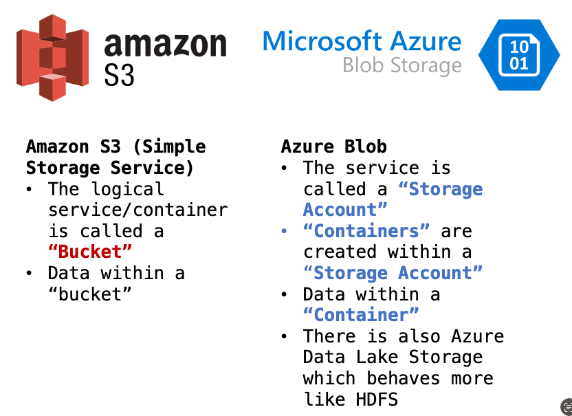
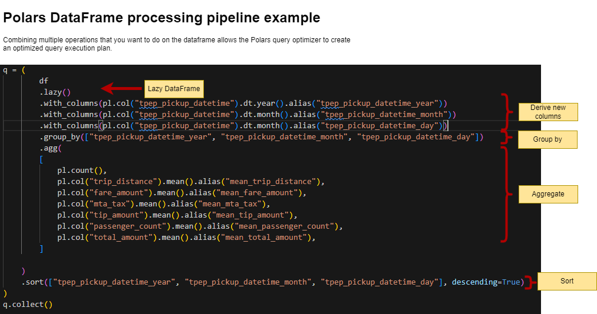
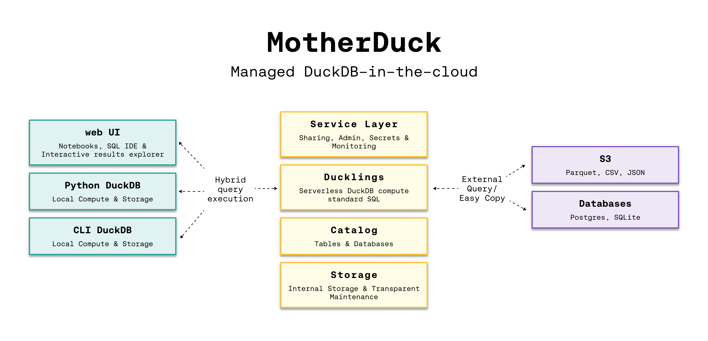

Week 4: DuckDB
DSAN 6000: Big Data and Cloud Computing
Fall 2026
Monday, September 21, 2026
Agenda and Goals for Today
Lecture
- Distributed file systems
- Modern file types
- Working with large tabular data on a single node
- DuckDB
- Polars
Lab
- Run a similar task with Pandas, polars and duckdb
Filesystems
Object Stores
- Somewhat confusing because object has several meanings in computer science.
- In this context, we’re talking about a specialized file-like construct. It could be any type of file: TXT, CSV, JSON, images, videos, audio



- Contains objects of all shapes and sizes: each gets a unique identifier
- Objects are immutable: cannot be modified in place (unlike local FS)
Data-on-Disk Formats
- Plain Text (CSV, TSV, FWF)
- JSON
- Binary Files
JSONL vs. JSON
JSON Lines: 4 records, one per line
Issues with Common File Formats Like CSV
(Ambiguities abound!)
- Delimiter: Comma? Tab? Semicolon?
- Quote characters: Single
'or double"quote? ASCII""or UTF-8“”? - Escaping special characters: Is
\nan actual new line, or a piece of a string value? - Schema information has to be sent/looked up separately
- Nested structures? …Improvised and included along with schema info
- Data engineers often forced to work with CSV data and then build robust exception handling and error detection to ensure data quality (Pydantic!)
Introducing Apache Parquet
- Free, open-source, column-oriented data storage format created by Twitter and Cloudera (v1.0 released July 2013)
- Data stored in columnar format (as opposed to row format), designed for read and write performance
- Builds in schema information and natively supports nested data
- Supported by R and Python through Apache Arrow (more coming up!)
Apache Arrow for In-Memory Analytics
Apache Arrow is a development platform for in-memory analytics. It contains a set of technologies that enable big data systems to process and move data fast. It specifies a standardized language-independent columnar memory format for flat and hierarchical data, organized for efficient analytic operations on modern hardware. (Topol and McKinney 2024)
Polars
Lightning-fast DataFrame library for Rust and Python
Why is Polars Faster than Pandas?
- Polars is written in Rust. Rust is compiled; Python is interpreted
- Compiled language: you generate the machine code only once then run it, subsequent runs do not need the compilation step.
- Interpreted language: code has to be parsed, interpreted and converted into machine code every single time.
- Parallelization: Vectorized operations can be executed in parallel on multiple cores
- Lazy evaluation: Polars supports two APIs lazy as well as eager evaluation (used by pandas). In lazy evaluation, a query is executed only when required. While in eager evaluation, a query is executed immediately.
- Polars uses Arrow for in-memory data representation. Similar to how pandas uses NumPy (Pandas 2 allows using Arrow as backend)
- Polars \(\approx\) in-memory DataFrame library + query optimizer
Ease of Use
Familiar API for users of Pandas: differences in syntax but still a Dataframe API making it straightforward to perform common operations such as filtering, aggregating, and joining data
Reading data
Selecting columns (see Pushdown optimization)
Ease of Use (contd.)
Filtering data
Though you can write Polars code that looks like Pandas, better to write idiomatic Polars code that takes advantage of Polars’ features
Migrating from Apache Spark: Whereas Spark DataFrame is a collection of rows, Polars DataFrame is closer to a collection of columns
Installation, Data Loading, and Basic Operations
Install via pip:
Import polars in your Python code and read data as usual:
import polars as pl
df = pl.read_parquet("s3://nyc-tlc/trip data/yellow_tripdata_2023-06.parquet")
df.head()
shape: (5, 19)
┌──────────┬────────────┬──────────────┬──────────────┬─────┬──────────────┬──────────────┬──────────────┬─────────────┐
│ VendorID ┆ tpep_picku ┆ tpep_dropoff ┆ passenger_co ┆ ... ┆ improvement_ ┆ total_amount ┆ congestion_s ┆ Airport_fee │
│ --- ┆ p_datetime ┆ _datetime ┆ unt ┆ ┆ surcharge ┆ --- ┆ urcharge ┆ --- │
│ i32 ┆ --- ┆ --- ┆ --- ┆ ┆ --- ┆ f64 ┆ --- ┆ f64 │
│ ┆ datetime[n ┆ datetime[ns] ┆ i64 ┆ ┆ f64 ┆ ┆ f64 ┆ │
│ ┆ s] ┆ ┆ ┆ ┆ ┆ ┆ ┆ │
╞══════════╪════════════╪══════════════╪══════════════╪═════╪══════════════╪══════════════╪══════════════╪═════════════╡
│ 1 ┆ 2023-06-01 ┆ 2023-06-01 ┆ 1 ┆ ... ┆ 1.0 ┆ 33.6 ┆ 2.5 ┆ 0.0 │
│ ┆ 00:08:48 ┆ 00:29:41 ┆ ┆ ┆ ┆ ┆ ┆ │
│ 1 ┆ 2023-06-01 ┆ 2023-06-01 ┆ 0 ┆ ... ┆ 1.0 ┆ 23.6 ┆ 2.5 ┆ 0.0 │
│ ┆ 00:15:04 ┆ 00:25:18 ┆ ┆ ┆ ┆ ┆ ┆ │
│ 1 ┆ 2023-06-01 ┆ 2023-06-01 ┆ 1 ┆ ... ┆ 1.0 ┆ 60.05 ┆ 0.0 ┆ 1.75 │
└──────────┴────────────┴──────────────┴──────────────┴─────┴──────────────┴──────────────┴──────────────┴─────────────┘Polars Pipeline Example
We’ll run this as part of the lab in a little bit; think how you might code this in Pandas…

Polars pipeline
DuckDB
An in-process SQL OLAP database management system
DuckDB
- DuckDB is an in-process SQL OLAP DB management system
- Like
sqlite, but for analytics. What does this mean? It means that your database runs inside your process, there are no servers to manage, no remote system to connect to. Easy to experiment with SQL-like syntax. - Vectorized processing: Loads chunks of data into memory (tries to keep everything in the CPU’s L1 and L2 cache) and is thus able to handle datasets bigger than the amount of RAM available.
- Supports Python, R and a host of other languages
- Important paper on DuckDB: Raasveldt and Mühleisen (2019)
DuckDB: Fully-Managed

MotherDuck Architecture
- Architecture and capabilities
- Seamlessly analyze data, whether it sits on your laptop, in the cloud or split between.
- Hybrid execution automatically plans each part of your query and determines where it’s best computed
- DuckDB Vs MotherDuck
Setting Up DuckDB
Configuration and Initialization: DuckDB is integrated into Python and R for efficient interactive data analysis (APIs for Java, C, C++, Julia, Swift, and others)
Connecting to DuckDB
Setting Up DuckDB (contd.)
Supported data formats: DuckDB can ingest data from a wide variety of formats – both on-disk and in-memory. See the data ingestion page for more information.
import duckdb
duckdb.read_csv('example.csv') # read a CSV file into a Relation
duckdb.read_parquet('example.parquet') # read a Parquet file into a Relation
duckdb.read_json('example.json') # read a JSON file into a Relation
duckdb.sql('SELECT * FROM "example.csv"') # directly query a CSV file
duckdb.sql('SELECT * FROM "example.parquet"') # directly query a Parquet file
duckdb.sql('SELECT * FROM "example.json"') # directly query a JSON fileQuerying DuckDB
Essential Reading
Basic SQL Queries
Aggregations and Grouping
Querying DuckDB (contd.)
Essential reading: FROM and JOIN clauses
Joins and Subqueries
Window Functions
powerplants = pd.read_csv("https://raw.githubusercontent.com/anly503/datasets/main/powerplants.csv", parse_dates=["date"])
q = """
SELECT "plant", "date",
AVG("MWh") OVER (
PARTITION BY "plant"
ORDER BY "date" ASC
RANGE BETWEEN INTERVAL 3 DAYS PRECEDING
AND INTERVAL 3 DAYS FOLLOWING)
AS "MWh 7-day Moving Average"
FROM powerplants
ORDER BY 1, 2;
"""
duckdb.sql(q)Using the DuckDB CLI and Shell
Install DuckDB CLI or use in browser via shell.duckdb.org for data exploration via SQL; Once installed, import a local file into the shell and run queries
You can download
powerplants.csvhereC:\Users\<username>\Downloads\duckdb_cli-windows-amd64> duckdb v0.8.1 6536a77232 Enter ".help" for usage hints. Connected to a transient in-memory database. Use ".open FILENAME" to reopen on a persistent database. D CREATE TABLE powerplants AS SELECT * FROM read_csv_auto('powerplants.csv'); D DESCRIBE powerplants; ┌─────────────┬─────────────┬─────────┬─────────┬─────────┬───────┐ │ column_name │ column_type │ null │ key │ default │ extra │ │ varchar │ varchar │ varchar │ varchar │ varchar │ int32 │ ├─────────────┼─────────────┼─────────┼─────────┼─────────┼───────┤ │ plant │ VARCHAR │ YES │ │ │ │ │ date │ DATE │ YES │ │ │ │ │ MWh │ BIGINT │ YES │ │ │ │ └─────────────┴─────────────┴─────────┴─────────┴─────────┴───────┘ D SELECT * from powerplants where plant='Boston' and date='2019-01-02'; ┌─────────┬────────────┬────────┐ │ plant │ date │ MWh │ │ varchar │ date │ int64 │ ├─────────┼────────────┼────────┤ │ Boston │ 2019-01-02 │ 564337 │ └─────────┴────────────┴────────┘
Profiling in DuckDB
Query Optimization: Use EXPLAIN and ANALYZE keywords to understand how your query is being executed and the time being spent in individual steps
DuckDB will use all the cores available on the underlying compute, but you can adjust this (Full configuration details here)
D select current_setting('threads');
┌────────────────────────────┐
│ current_setting('threads') │
│ int64 │
├────────────────────────────┤
│ 8 │
└────────────────────────────┘
D SET threads=4;
D select current_setting('threads');
┌────────────────────────────┐
│ current_setting('threads') │
│ int64 │
├────────────────────────────┤
│ 4 │
└────────────────────────────┘In-Class Demo
References
DSAN 6000 Week 4: DuckDB